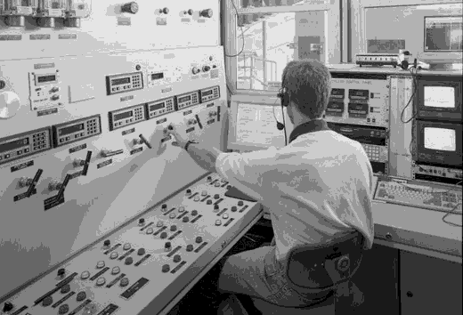
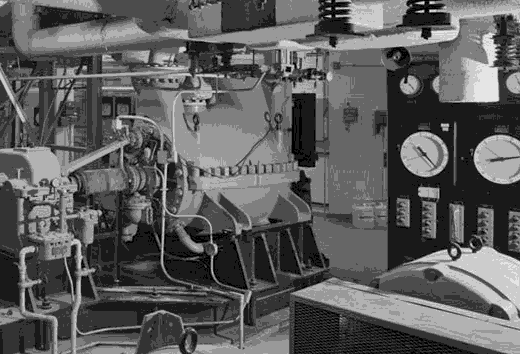

Technical Systems ControlsTechnical Systems Controls
Technical Systems ControlsTechnical Systems Controls

Maintaining the physical resources of the FTAA, Technical Systems Controls (TSC) is the backbone of the organization's health. The operation and maintenance of the Tigner MkII Super Collider is a key function of the TSC division. In addition, this dedicated group of technicians ensure the proper functioning of the FTAA-7 caesium clock and the FTAA's extensive and diverse historic motor pool.




Mission | Programs and Operations | Employee Data Storage | Index
Need help? Have a temporal policy question? Email us at ftaaweb@stjc.edu or by phone at (202) 738-9235.
Last Updated: November 18, 1993
This site is best viewed using the NCSA Mosaic WWW browser.